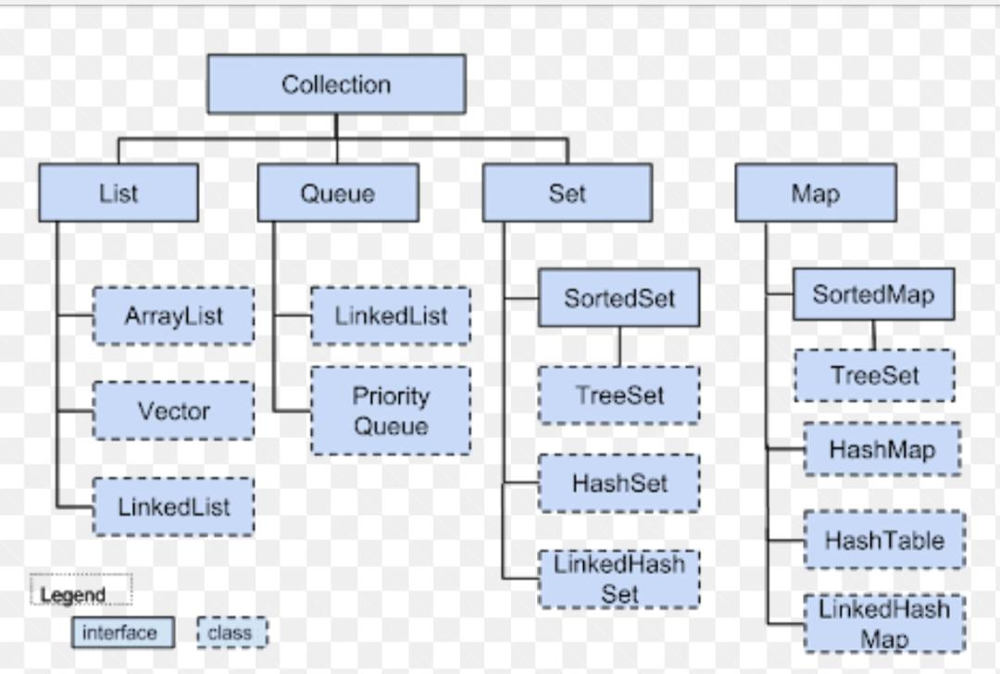

Data structures:
Data structure is a way of storing and manipulating the internal data of a computer program.The data structures provided by the Java utility package are very powerful and perform a wide range of functions.

Some of those are:
1. Array: An array is a collection of items stored at contiguous memory locations.
2. Linked List: A linked list is a linear data structure, in which the elements are not stored at contiguous memory locations. The elements in a linked list are linked using pointers.
3. Stack: Stack is a linear data structure which follows a particular order in which the operations are performed. The order may be LIFO(Last In First Out) or FILO(First In Last Out).
4. Queue: A Queue is a linear structure which follows a particular order in which the operations are performed. The order is First In First Out (FIFO).
5. Binary Tree: A tree whose elements have at most 2 children is called a binary tree.
6. Heap: A Heap is a special Tree-based data structure in which the tree is a complete binary tree.
7. Graph: A Graph is a non-linear data structure consisting of nodes and edges. The nodes are sometimes also referred to as vertices and the edges are lines or arcs that connect any two nodes in the graph.
8. Matrix: A matrix represents a collection of numbers arranged in an order of rows and columns.
These data structures consist of the following interface and classes:
1. Enumeration
2. BitSet
3. Vector
4. Stack
5. Dictionary
6. Hashtable
7. Properties